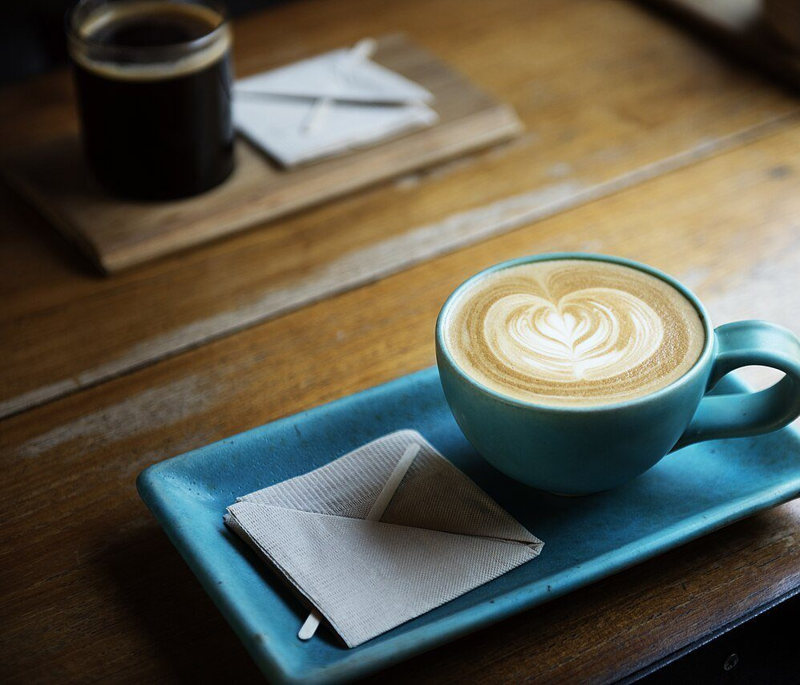
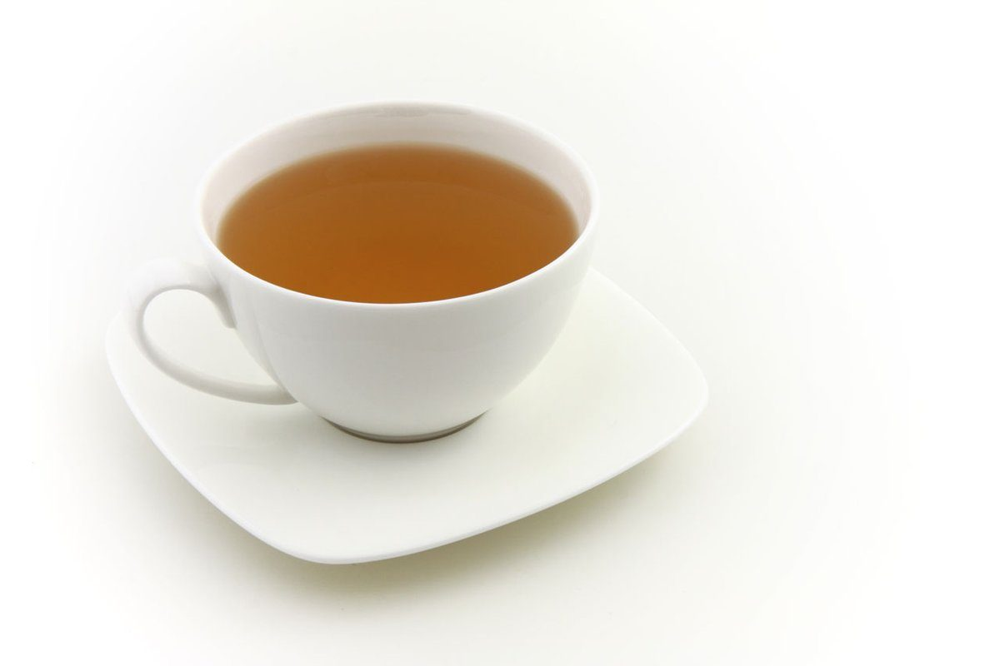
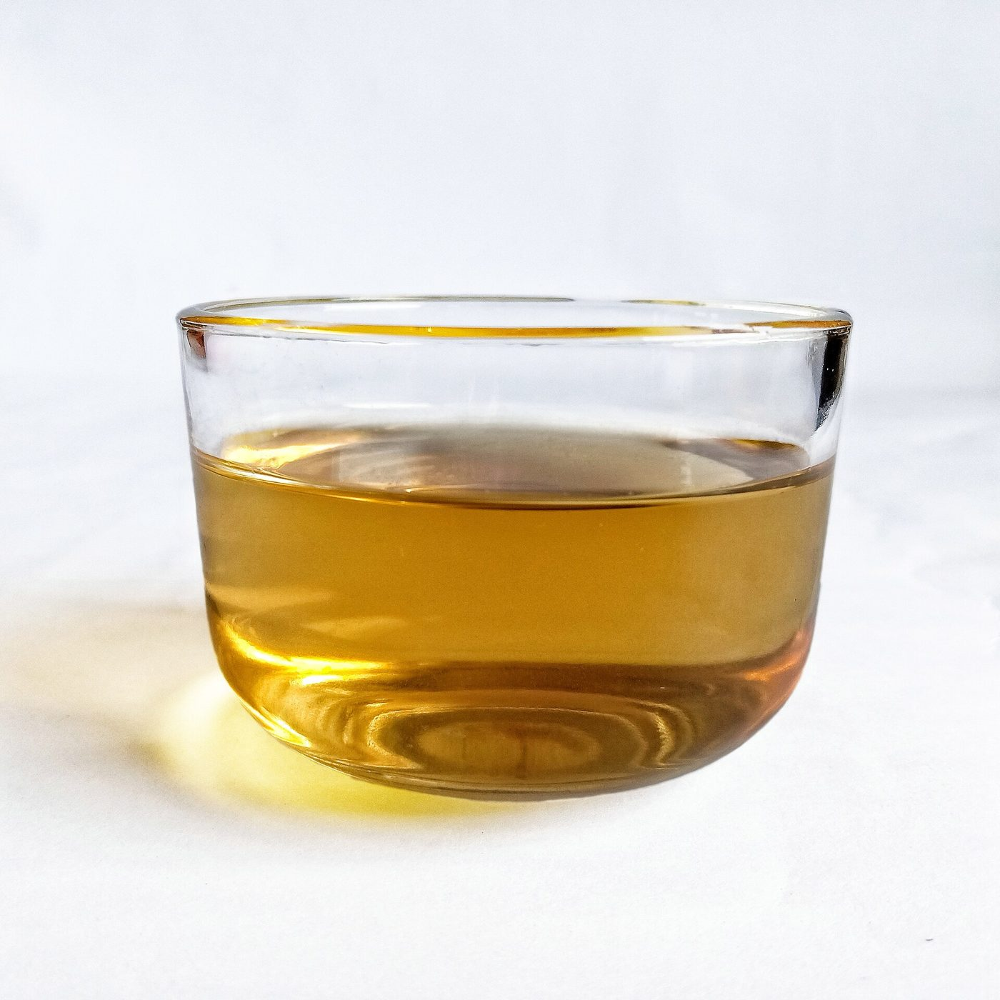

店のこと
六つの部位の配置図
お店の詳しい情報は準備中です。ここでは、制作側が考えたデザインの見かたをご紹介します。
制作側の連想
番号は、部位の番号
ホームの図にある1〜6の番号は、それぞれ部位の名前に対応します。制作側の連想で、お店の理念・由来とは無関係です。実際の製品の仕様を示すものでもありません。
1
排気口
ふたの上に開けた、湿った空気を外へ逃がすための細い穴。
2
ふた
いちばん上のトレイをおおう、熱を逃がさないためのカバー。
3
トレイ
食材を並べる、網目状の棚段。何段も重ねて使う。
4
ヒーター
庫内の空気をあたためるための、うねった線状の部分。
5
送風ファン
あたためた空気を、トレイの間へ流すための羽根。
6
温度ダイヤル
風の温度を選ぶ、まるいつまみ。
写真帯(イメージ)
カップとコーヒー豆の写真





写真はカフェのイメージです。お店のものではありません。
確認できていること
お店の情報
| 屋号 | 若草珈琲 Wakagusa Coffee |
|---|---|
| 所在地 | 〒403-0004 山梨県富士吉田市下吉田3丁目15-14 |
| SNS | Instagram @wakagusa_coffee |
| そのほか | 準備中 |